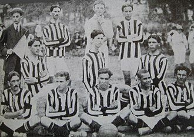

História
Em 2011, com a parceria da Cortiana Plásticos, o Santos formou um grande time para a modalidade, sendo a base da Seleção Brasileira de Futsal, chegando a ter sete convocados de uma só vez. O time foi comandado pelo técnico Fernando Ferretti, tendo o melhor do mundo nas quadras, Falcão, além de grandes jogadores como Pixote, Neto, Índio, Valdin, Jackson e Jé. Em apenas 1 ano, o time conquistou a Liga Futsal e a Copa Gramado, sendo que a Liga Futsal foi vencida nos pênaltis, contra o tradicional Carlos Barbosa na Arena Santos (onde o clube mandou os jogos). E com essa conquista, o Santos foi o primeiro clube paulista, a conquistar a Liga Futsal. Depois de dois títulos e também o vice da Liga Paulista, o Santos encerrou a parceria com a Cortiana Plásticos e fechou o time de futsal, no final de 2011. Atualmente, o clube disputa torneios de futsal com equipes de base.
